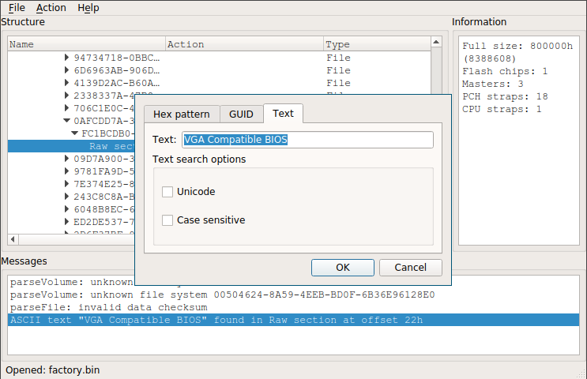

New system setup: Coreboot + Grub + Luks + Btrfs + Alpine
I used Arch Linux for some time, should switch to Alpine Linux for simplicity. The setup will be on thinkpad x220 brought from Kai Hendry, thanks to him for keeping his laptop in good state. :)
Quick overview:
- Bootloader: Coreboot + Grub payload (testing)
- Encryption: Dm-crypt LUKS + key file from sd card
- Filesystem: Btrfs raid 0 (data) + raid 1 (metadata)
- Root setup: Alpine Linux
Setting up Coreboot
Why switch to coreboot? Default firmware took 8s to boot. Now x < 2s. Haha!
Preparation
- Get raspberry pi 2 and SOIC clip + probe cables
- Install flashrom and build coreboot with grub2 payload
- Prerequisite:
make crossgcc-i386 CPUS=4,make iasl
Set up flasher - coreboot wiki and tylercipriani
- Lenovo guide to remove keyboard and palm rest
- Purge any power source of laptop & programmer (rpi2)
- Connect the probe cables between programmer and chip
- Then only turn on the power source of programmer
(Optional) Extracting the VGA BIOS which is better than SeaVGABios
- More info available at nroach44 and coreboot wiki
- Download, build uefitool, open factory.rom with uefitool
- Search for text "VGA Compatible BIOS" with unicode unchecked
- Double click matching result, then extract body of
Raw section - (Optional) check word "VGA Display controller" with
romheaders
(Optional) Cleaning up me.bin (now this option is in nconfig)
- More info available at nroach44
- Necessary:
util/me_cleaner/me_cleaner.py build/coreboot.bin - (Optional) Verify that
util/intelmetool/intelmetool -sshow output "Firmware Init Complete" as "NO" - To proceed -
util/me_cleaner/me_cleaner.py me.binandmake hexdump me.binand check last byte which have tons offfffdd if=me.bin of=truc.bin bs=1 count=$(printf '%d' 0x00dbc90)
(Optional) Setting battery threshold
- More info available at vej's blog
- Build util/ectool
- Battery start threshold 75% -
util/ectool -w 0xb1 -z 0x4b - Battery stop threshold 80% -
util/ectool -w 0xb1 -z 0x50
Building coreboot
More info available at coreboot wiki x220 page
First check
flashrom -p linux_spi:dev=/dev/spidev0.0If it gets an error: poweroff, reconnect pin and boot
flashrom -p linux_spi:dev=/dev/spidev0.0 -r orig.binCheck orig.bin hash & redo step 4-5, not same? step 2
Extract the factory binary blob:
ifdtool -x orig.binMove outputs to
3rdparty/blobs/mainboard/lenovo/x220Rename files as "descriptor.bin", "gbe.bin", "me.bin"
make nconfigand tune it accordingly .config (dead)If it builds, verify with step 4-5 twice and finally:
flashrom -p linux_spi:dev=/dev/spidev0.0 -w build/coreboot.rom
After coreboot is flashed, internal flashing can be done by:
iomem=relaxedin cmdlineflashrom -p internal:laptop=force_I_want_a_brick -c MX25L6405 -w build/coreboot.rom --ifd -i bios -n
Tips and tricks:
- Find bootorder with
CONFIG_USE_OPTION_TABLE,CONFIG_CONSOLE_CBMEM,DEFAULT_CONSOLE_LOGLEVEL_6, thenutil/cbmem/cbmem -c | grep booto. - The extra config such as
bootorder,config_seabioscan be set with$(top)/src/mainboard/$(MAINBOARDDIR)/*where you can store it insidesrc/mainboard/lenovo/x220/to differentiate between different boards.
- Find bootorder with

Setting up a testing environment
This is just some random stuff how I tested it out with qemu, might help.
Setting up full disk encryption
For how it is now, I will just draw an image:
+------------------------+ +------------------------+
| /dev/sda1 111GB (root) |---->| /dev/mapper/p0 (crypt) |-------------+
+------------------------+ +------------------------+ v
| /dev/sda2 8GB (swap) | +-----------------+
+------------------------+ | / - btrfs raid0 |
+-----------------+
+------------------------+ +------------------------+ ^
| /dev/sdb 119GB (root) |---->| /dev/mapper/p1 (crypt) |-------------+
+------------------------+ +------------------------+
- https://wiki.archlinux.org/index.php/GRUB/Tips_and_tricks
- https://www.gnu.org/software/grub/manual/grub.html#Security
- https://www.reddit.com/r/coreboot/comments/4uahg5/coreboot_on_x220_examples_of_grubcfg_with_support
- https://notabug.org/vimuser/libreboot/src/master/resources/grub/config
- https://www.coreboot.org/GRUB2#Security